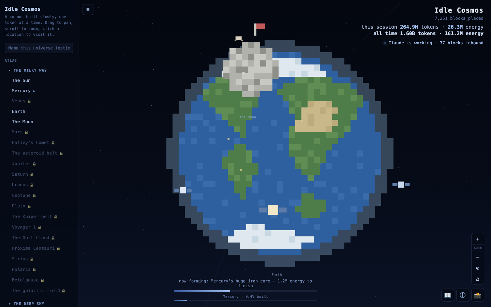

The Sun and Earth, built from real Claude Code token usage — genuine progress, no staged demo.
Every token Claude consumes — across all your Claude
Code sessions — pools into cosmic energy that slowly reconstructs our
real cosmic neighbourhood as pixel art: the Sun, built core outward
(core → radiative zone → convective zone → photosphere), then Earth
layer by geological layer (inner core, outer core, mantles, crust,
oceans, atmosphere), the Moon, the planets, Halley's Comet, the
asteroid and Kuiper belts, Voyager 1, the Oort Cloud, real nearby
stars, nebulae, galaxies, black holes, quasars, the Cosmic Microwave
Background — all the way out to the Laniakea Supercluster, the vast
structure our own galaxy belongs to.

Earth complete, with orbiting satellites and the Moon — flag and lunar module included.
What it does
A real educational atlas. Every location — including ones that haven't formed yet, shown greyed-out and locked — carries a genuine astronomy fact and a stats table.
Three paces. Patient (the slow burn, default), Steady, and Eager just change how much energy one block costs. Same tokens, same universe, switching is lossless.
A private achievement book. Rare things occasionally cross the sky — a supernova, a black hole, a quasar, a gamma-ray burst, a kilonova, a meteoroid collision, a rogue planet. Each is silently recorded the first time you see it. The book never lists what you haven't found yet.
Real spacecraft. Ingenuity hopping near the Mars rover, Cassini's actual 2017 dive into Saturn, Voyager 2's flybys of Uranus and Neptune, New Horizons at Pluto, the Apollo lunar module beside the Moon's flag — and one deliberately non-real visitor at Earth.
No real ceiling. Once everything unlockable is fully built, the universe can cool and a new cycle begins from a new seed — your achievement book and lifetime totals carry over.
Personalize it. Give it a name and it becomes "Idle Cosmos: Yourname's Universe" everywhere — sidebar, browser tab, even the screenshot filename.
How the connection works (and why it's safe)
Claude Code keeps a log of every session on your machine, including
exact token counts. This app only reads those local
files — no API key, no login, no data ever leaves your
computer.
This page is a static description of the project — the actual
interactive universe needs a small local server running on your own
machine to read your own Claude Code logs, so it can't run inside a
web page like this one.
Running it yourself
git clone https://github.com/JozsuaHeng/Idle-Cosmos.git
cd Idle-Cosmos
node server.js # then visit http://localhost:4816
Zero npm dependencies — just Node's built-ins. See the
README
for the optional Claude Code hook that opens the page automatically
whenever you submit a prompt.